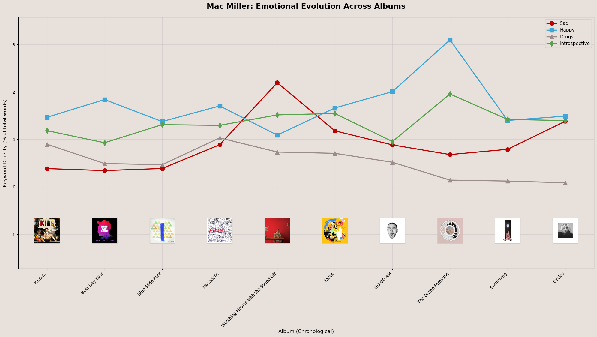
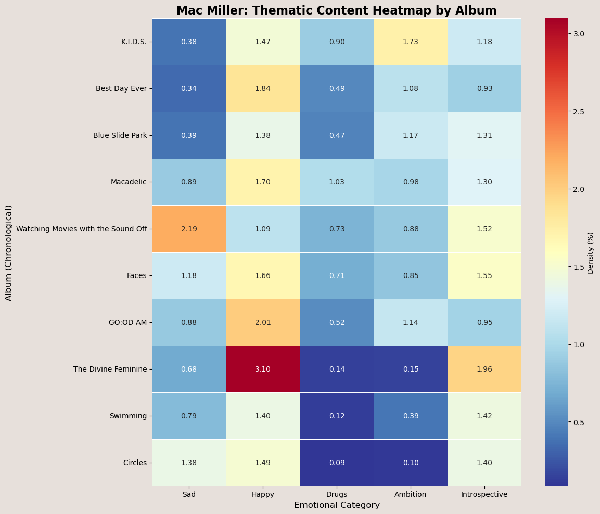
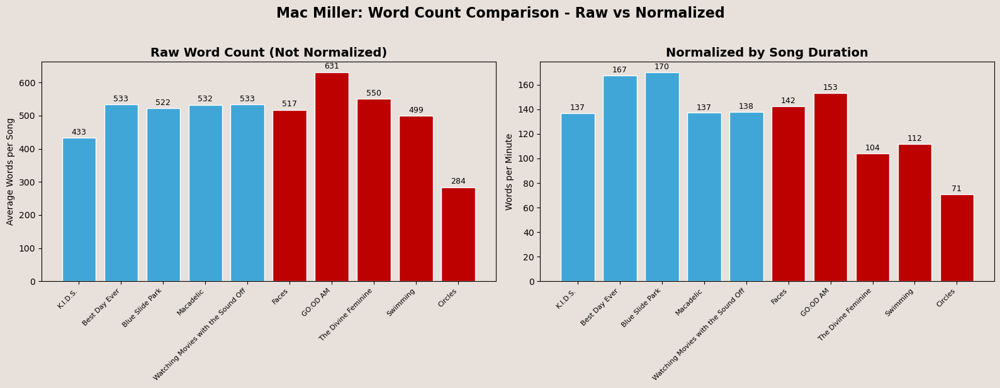

Tracking Mac Miller's Emotional Evolution Across Albums
Any Gen Z music fan knows that Mac Miller’s lyrical content becomes measurably sadder, more introspective, and less dense over his career. I wanted to test whether that feeling actually shows up in the data instead of just being repeated as a fan narrative.
I used a GitHub dataset of 390 Mac Miller songs with full lyrics and metadata, then narrowed it to 163 songs across his 10 main studio albums, including the posthumous album Circles. The album and release-date metadata mattered because the core question is chronological: does the writing change as the discography moves forward?
To clean the data, I removed bracketed tags like [Verse 1] and [Chorus], stripped special characters, lowercased the lyrics, and calculated word count per song. I then normalized by average album song duration to create a words-per-minute measure so longer tracks would not inflate the analysis unfairly. For emotional analysis, I built five manual keyword buckets: sad, happy, drugs, ambition, and introspective.

The line plot makes the high-level trend clear. Sad and introspective density both rise across the albums, while drug and ambition themes fade in the later projects. The Divine Feminine stands out as both one of the happiest and one of the most introspective albums, while Circles looks like a distinctly more reflective period.

The heatmap is useful because it makes cross-category comparisons easier without forcing the reader to hunt through the numbers. It reinforces Circles as a low-drug, low-ambition, more reflective album, and it shows Watching Movies with the Sound Off standing out as one of the lyrically saddest points in the catalog.

The word-count charts tell a second part of the story. Earlier albums like GOOD: AM and Macadelic carry some of the highest lyrical density, while Circles sits at the bottom. Once normalized to words per minute, the gap between the early and late albums looks even sharper.
The statistical tests supported the visual read. An ANOVA rejected the null hypothesis for mean word count across albums, the first-versus-last-album t-test showed a significant drop in word count, and the sad-density t-test showed that later albums have materially higher sad-keyword density than earlier ones. Taken together, the differences look real rather than anecdotal.
The biggest limitation is context. A phrase like “sunshine never stays” can feel sad, but a word-bucket method may still count “sunshine” as happy. The bucket construction is also subjective, song release dates do not perfectly match recording chronology, and this is a lyrics-only study even though instrumentation plays a huge role in how albums like Swimming and Circles feel emotionally. Still, the overall result is clear: Mac Miller’s music genuinely reflects an emotional evolution over time.